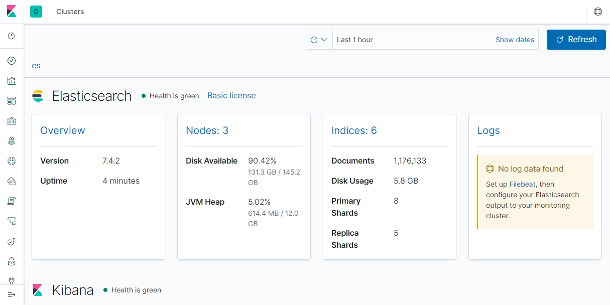
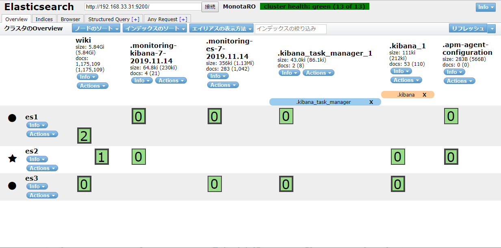
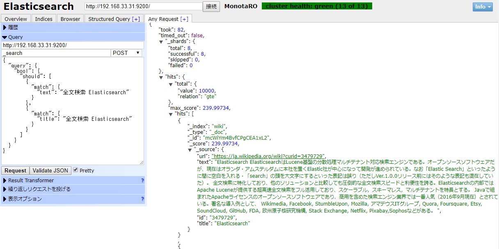

Elasticsearch を構築する
ローカルで Elasticsearch を構築しました。 Elasticsearch 用に 3台，Kibana 用に 1台 VM を立てました。
VM 作成
Vagrantfile を作成して vagrant up します。
# Elasticsearch ノード数
es_cnt = 3
cnt = 4
Vagrant.configure("2") do |config|
config.vm.box = "ubuntu/bionic64"
config.vm.synced_folder "./share", "/home/vagrant/share", owner: "vagrant", group: "vagrant"
#--- Elasticsearch 構築 ---#
(1..es_cnt).each do |i|
config.vm.define "es#{i}" do | es |
es.disksize.size = '50GB'
es.vm.provider "virtualbox" do |vb|
vb.memory = 8192
end
es.vm.hostname = "es#{i}"
es.vm.network "private_network", ip: "192.168.33.3#{i}"
es.vm.provision :hosts, :sync_hosts => true
end
end
#--- /Elasticsearch 構築 ---#
#--- Kibana 構築 ---#
config.vm.define "kibana" do | kibana |
kibana.disksize.size = '10GB'
kibana.vm.provider "virtualbox" do |vb|
vb.memory = 2048
end
kibana.vm.hostname = "kibana"
kibana.vm.network "private_network", ip: "192.168.33.34"
kibana.vm.provision :hosts, :sync_hosts => true
end
#--- /Kibana 構築 ---#
end
> pwd
D:\vagrant\elasticsearch
> vagrant up
Elasticsearch 構築
各 VM で以下を実行します。
JDK
$ sudo apt -y update
$ sudo apt -y upgrade
$ sudo apt install -y openjdk-11-jdk
Elasticsaerch
$ wget -qO - https://artifacts.elastic.co/GPG-KEY-elasticsearch | sudo apt-key add -
$ sudo apt install -y apt-transport-https
$ echo "deb https://artifacts.elastic.co/packages/7.x/apt stable main" | sudo tee -a /etc/apt/sources.list.d/elastic-7.x.list
$ sudo apt -y update
$ sudo apt -y install elasticsearch
Elasticsearch 設定
sudo sed -i -e 's|#cluster.name.*$|cluster.name: es|' /etc/elasticsearch/elasticsearch.yml
sudo sed -i -e "s|#node.name.*$|node.name: ${HOSTNAME}|" /etc/elasticsearch/elasticsearch.yml
sudo sed -i -e 's|#bootstrap.memory_lock.*$|bootstrap.memory_lock: true|' /etc/elasticsearch/elasticsearch.yml
# 通常
# sudo sed -i -e 's|#network.host.*$|network.host: 0.0.0.0|' /etc/elasticsearch/elasticsearch.yml
# Vagrant 用
sudo sed -i -e "s|#network.host.*$|network.host: '_enp0s8_'|" /etc/elasticsearch/elasticsearch.yml
sudo sed -i -e 's|#discovery.seed_hosts.*$|discovery.seed_hosts: ["es1", "es2", "es3"]|' /etc/elasticsearch/elasticsearch.yml
sudo sed -i -e 's|#cluster.initial_master_nodes.*$|cluster.initial_master_nodes: ["es1", "es2", "es3"]|' /etc/elasticsearch/elasticsearch.yml
echo '# allow connection from elasticsearch-head' | sudo tee -a /etc/elasticsearch/elasticsearch.yml
echo 'http.cors.enabled: true' | sudo tee -a /etc/elasticsearch/elasticsearch.yml
echo 'http.cors.allow-origin: "*"' | sudo tee -a /etc/elasticsearch/elasticsearch.yml
$ sudo grep -v -e '^\s*#' -e '^\s*$' /etc/elasticsearch/elasticsearch.yml
cluster.name: es
node.name: es1
path.data: /var/lib/elasticsearch
path.logs: /var/log/elasticsearch
bootstrap.memory_lock: true
network.host: 0.0.0.0
discovery.seed_hosts: ["es1", "es2", "es3"]
cluster.initial_master_nodes: ["es1", "es2", "es3"]
http.cors.enabled: true
http.cors.allow-origin: "*"
JVM 設定
- メモリの半分を割り当てる
$ sudo sed -i -e 's|-Xms1g|-Xms4g|' /etc/elasticsearch/jvm.options
$ sudo sed -i -e 's|-Xmx1g|-Xmx4g|' /etc/elasticsearch/jvm.options
$ sudo grep -e '^-Xm' /etc/elasticsearch/jvm.options
-Xms4g
-Xmx4g
ulimits 変更
$ sudo sed -i -e 's|# End of file|elasticsearch - nofile 65536\n# End of file|' /etc/security/limits.conf
$ sudo sed -i -e 's|# End of file|elasticsearch - memlock unlimited\n# End of file|' /etc/security/limits.conf
$ sudo sed -i -e 's|# End of file|root - memlock unlimited\n# End of file|' /etc/security/limits.conf
$ sudo grep -v -e '^\s*#' -e '^\s*$' /etc/security/limits.conf
elasticsearch - nofile 65536
elasticsearch - memlock unlimited
root - memlock unlimited
SWAP しないようにする設定
$ sudo sed -i -e 's|#MAX_LOCKED_MEMORY=unlimited|MAX_LOCKED_MEMORY=unlimited|' /etc/default/elasticsearch
$ sudo grep -v -e '^\s*#' -e '^\s*$' /etc/default/elasticsearch
ES_PATH_CONF=/etc/elasticsearch
ES_STARTUP_SLEEP_TIME=5
MAX_LOCKED_MEMORY=unlimited
$ sudo sed -i -e 's|\[Service\]|[Service]\nLimitMEMLOCK=infinity|' /usr/lib/systemd/system/elasticsearch.service
$ head -n 10 /usr/lib/systemd/system/elasticsearch.service
[Unit]
Description=Elasticsearch
Documentation=http://www.elastic.co
Wants=network-online.target
After=network-online.target
[Service]
LimitMEMLOCK=infinity
RuntimeDirectory=elasticsearch
PrivateTmp=true
$ sudo systemctl daemon-reload
サービス起動設定
$ sudo systemctl enable elasticsearch
Plugin
Kuromoji
$ sudo /usr/share/elasticsearch/bin/elasticsearch-plugin install analysis-kuromoji
ICU
$ sudo /usr/share/elasticsearch/bin/elasticsearch-plugin install analysis-icu
FireWall
$ sudo ufw --force enable
$ sudo ufw allow 22
$ sudo ufw allow 80
$ sudo ufw allow 9200
$ sudo ufw allow 9300
起動
$ sudo systemctl start elasticsearch
$ curl http://192.168.33.31:9200/_cluster/health?pretty
{
"cluster_name" : "es",
"status" : "green",
"timed_out" : false,
"number_of_nodes" : 3,
"number_of_data_nodes" : 3,
"active_primary_shards" : 0,
"active_shards" : 0,
"relocating_shards" : 0,
"initializing_shards" : 0,
"unassigned_shards" : 0,
"delayed_unassigned_shards" : 0,
"number_of_pending_tasks" : 0,
"number_of_in_flight_fetch" : 0,
"task_max_waiting_in_queue_millis" : 0,
"active_shards_percent_as_number" : 100.0
}
無事 Elasticsearch が起動しました。
Kibana 構築
インストール
$ sudo apt -y update
$ sudo apt -y upgrade
$ wget -qO - https://artifacts.elastic.co/GPG-KEY-elasticsearch | sudo apt-key add -
$ sudo apt-get install apt-transport-https
$ echo "deb https://artifacts.elastic.co/packages/7.x/apt stable main" | sudo tee -a /etc/apt/sources.list.d/elastic-7.x.list
$ sudo apt-get update && sudo apt-get install kibana
設定
$ sudo sed -i -e "s|#server.name.*$|server.name: 'kibana'|" /etc/kibana/kibana.yml
$ sudo sed -i -e 's|#server.host.*$|server.host: 0.0.0.0|' /etc/kibana/kibana.yml
$ sudo sed -i -e 's|#elasticsearch.hosts.*$|elasticsearch.hosts: ["http://es1:9200"]|' /etc/kibana/kibana.yml
$ grep -v -e '^\s*#' -e '^\s*$' /etc/kibana/kibana.yml
server.host: 0.0.0.0
server.name: kibana
elasticsearch.hosts: ["http://es1:9200"]
起動設定
$ sudo systemctl daemon-reload
$ sudo systemctl enable kibana
起動
$ sudo systemctl start kibana
analyze_api_ui
$ cd /usr/share/kibana/
$ sudo ./bin/kibana-plugin --allow-root install https://github.com/johtani/analyze-api-ui-plugin/releases/download/7.3.0/analyze_api_ui-7.3.0.zip
FireWall
$ sudo ufw --force enable
$ sudo ufw allow 22
$ sudo ufw allow 80
$ sudo ufw allow 5601
kibana 使用
http://192.168.33.34:5601/

elasticsearch-head
インストール
$ sudo apt -y install nodejs
$ sudo apt -y install npm
$ sudo git clone https://github.com/mobz/elasticsearch-head.git
$ cd elasticsearch-head
$ sudo npm install
起動
$ pwd
/home/vagrant/elasticsearch-head
$ npm run start
FireWall
$ sudo ufw allow 9100
elasticsearch-head 使用
http://192.168.33.34:9100

